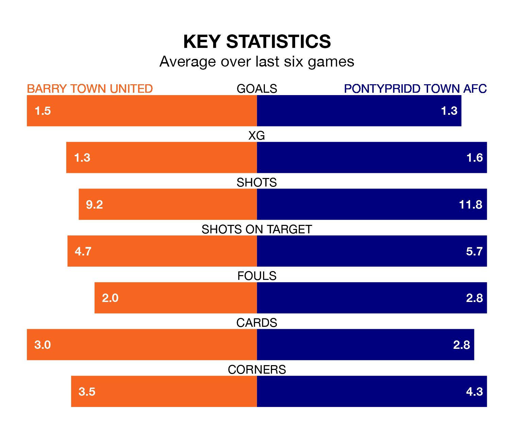

Welsh Premier League's top two sides face each other at Jenner Park in Saturday lunchtime's kick-off, when zero-placed Barry Town United host zero-placed Pontypridd Town AFC.
Barry Town have picked up six wins and five draws from 22 games so far this season, and sit four points above the visitors going into the 1pm match.
Pontypridd Town AFC, meanwhile, have won five and drawn four, picking up 19 points.
With 13 goals in 22 games so far this season, Pontypridd Town are the league's-5th-lowest scorers with 0.6 goals per game. But they are conceding fewer than average too, letting in 31 goals at a rate of 1.4 per game.
Barry Town are also below average scorers, with 1.2 goals per game, compared to a league average of 1.5. They have conceded 1.9 goals per game.
United are in mixed form in Welsh Premier League, with two wins and two draws from their last six games.
With two wins and four losses over that period, Pontypridd Town AFC's form is slightly worse – they have taken six points from 18, compared to Barry Town United's eight.
In the last three years, Barry Town and Pontypridd Town have played each other on three occasions. Barry Town won two of them and Pontypridd Town one.
Their last meeting was on October 17, when Barry Town won 2-0 at home.
Barry Town's last match was on January 13, a 4-2 win against Aberystwyth Town, with Kayne McLaggon, Lucas Tomlinson, Ollie Hulbert and Sam Snaith getting the goals for Barry Town United.
Pontypridd Town beat Colwyn Bay 3-2 last time out, also on January 13, with Clayton Green (two) and Luke Cummings on the scoresheet.
Updated: 08:51 (UTC), 25/01/24